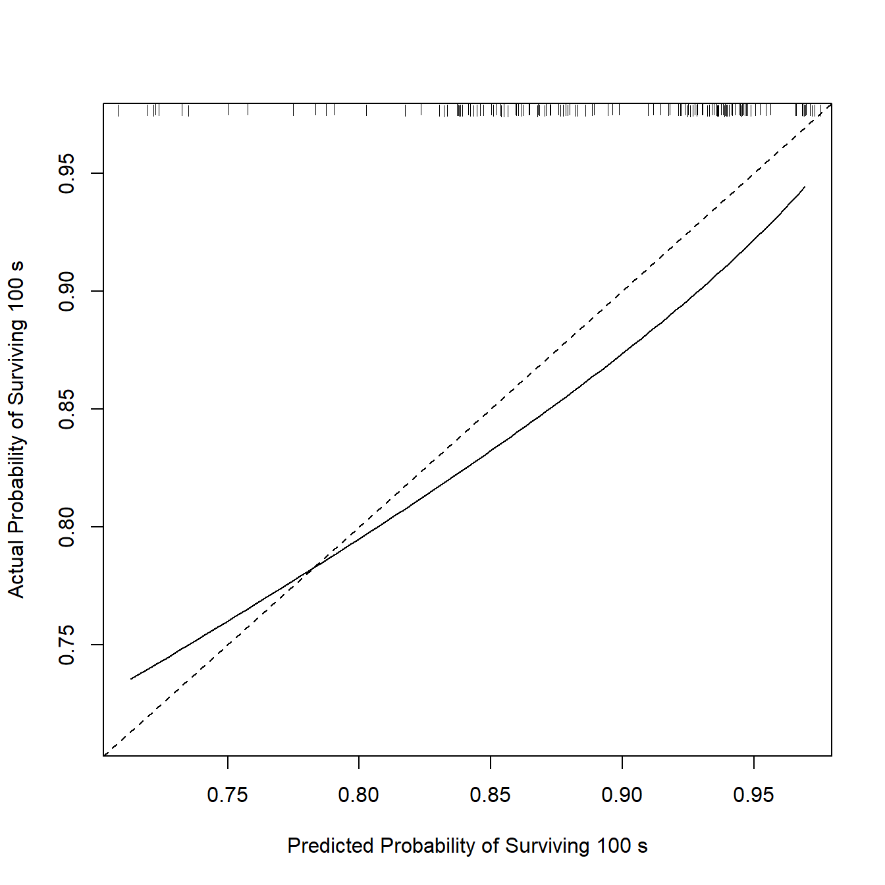
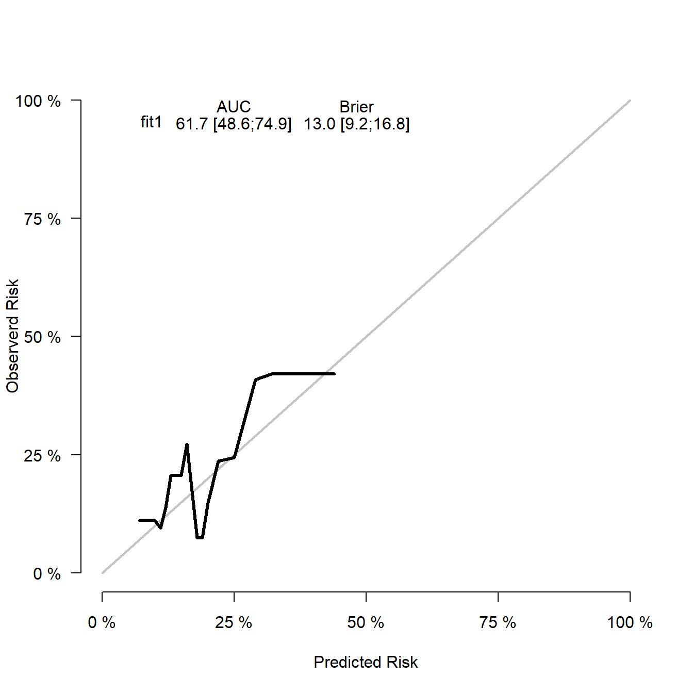

library(survival)
library(rms)
## Loading required package: Hmisc
##
## Attaching package: 'Hmisc'
## The following objects are masked from 'package:base':
##
## format.pval, units
## Warning in .recacheSubclasses(def@className, def, env): undefined subclass
## "ndiMatrix" of class "replValueSp"; definition not updated
library(ggplot2)33 Cox回归校准曲线绘制
前面我们已经讲过logistic模型的校准曲线的画法，这次我们学习生存资料的校准曲线画法。
33.1 加载R包和数据
试试使用自带数据lung数据集进行演示。
大多数情况下都是使用1代表死亡，0代表删失，这个数据集用2代表死亡。但有的R包会报错，需要注意！
rm(list = ls())
dim(lung)
## [1] 228 10
str(lung)
## 'data.frame': 228 obs. of 10 variables:
## $ inst : num 3 3 3 5 1 12 7 11 1 7 ...
## $ time : num 306 455 1010 210 883 ...
## $ status : num 2 2 1 2 2 1 2 2 2 2 ...
## $ age : num 74 68 56 57 60 74 68 71 53 61 ...
## $ sex : num 1 1 1 1 1 1 2 2 1 1 ...
## $ ph.ecog : num 1 0 0 1 0 1 2 2 1 2 ...
## $ ph.karno : num 90 90 90 90 100 50 70 60 70 70 ...
## $ pat.karno: num 100 90 90 60 90 80 60 80 80 70 ...
## $ meal.cal : num 1175 1225 NA 1150 NA ...
## $ wt.loss : num NA 15 15 11 0 0 10 1 16 34 ...library(dplyr)
##
## Attaching package: 'dplyr'
## The following objects are masked from 'package:Hmisc':
##
## src, summarize
## The following objects are masked from 'package:stats':
##
## filter, lag
## The following objects are masked from 'package:base':
##
## intersect, setdiff, setequal, union
library(tidyr)
df1 <- lung %>%
mutate(status=ifelse(status == 2,1,0))
str(lung)
## 'data.frame': 228 obs. of 10 variables:
## $ inst : num 3 3 3 5 1 12 7 11 1 7 ...
## $ time : num 306 455 1010 210 883 ...
## $ status : num 2 2 1 2 2 1 2 2 2 2 ...
## $ age : num 74 68 56 57 60 74 68 71 53 61 ...
## $ sex : num 1 1 1 1 1 1 2 2 1 1 ...
## $ ph.ecog : num 1 0 0 1 0 1 2 2 1 2 ...
## $ ph.karno : num 90 90 90 90 100 50 70 60 70 70 ...
## $ pat.karno: num 100 90 90 60 90 80 60 80 80 70 ...
## $ meal.cal : num 1175 1225 NA 1150 NA ...
## $ wt.loss : num NA 15 15 11 0 0 10 1 16 34 ...33.2 方法1：rms
dd <- datadist(df1)
options(datadist = "dd")构建cox比例风险模型：
# 1年
coxfit1 <- cph(Surv(time, status) ~ age + sex + ph.ecog + ph.karno + pat.karno,
data = df1, x=T,y=T,surv = T,
time.inc = 365 # 1 年
)
# m=50表示每次计算50个样本，一般取4-6个点，u=365和上面的time.inc对应
cal1 <- calibrate(coxfit1, cmethod="KM", method="boot",u=365,m=50,B=500)
## Using Cox survival estimates at 365 Days
## Warning in groupkm(cox, Surv(y[, 1], y[, 2]), u = u, cuts = orig.cuts): one
## interval had < 2 observations
## Warning in groupkm(cox, Surv(y[, 1], y[, 2]), u = u, cuts = orig.cuts): one
## interval had < 2 observations
## Warning in groupkm(cox, Surv(y[, 1], y[, 2]), u = u, cuts = orig.cuts): one
## interval had < 2 observations
## Warning in groupkm(cox, Surv(y[, 1], y[, 2]), u = u, cuts = orig.cuts): one
## interval had < 2 observations
## Warning in groupkm(cox, Surv(y[, 1], y[, 2]), u = u, cuts = orig.cuts): one
## interval had < 2 observations
## Warning in groupkm(cox, Surv(y[, 1], y[, 2]), u = u, cuts = orig.cuts): one
## interval had < 2 observations然后就是画图：
plot(cal1,
lwd = 2, # 误差线粗细
lty = 1, # 误差线类型，可选0-6
errbar.col = c("#2166AC"), # 误差线颜色
xlim = c(0,1),ylim= c(0,1),
xlab = "Nomogram-prediced OS (%)",ylab = "Observed OS (%)",
cex.lab=1.2, cex.axis=1, cex.main=1.2, cex.sub=0.6) # 字体大小
lines(cal1[,c('mean.predicted',"KM")],
type = 'b', # 连线的类型，可以是"p","b","o"
lwd = 3, # 连线的粗细
pch = 16, # 点的形状，可以是0-20
col = "tomato") # 连线的颜色
box(lwd = 2) # 边框粗细
abline(0,1,lty = 3, # 对角线为虚线
lwd = 2, # 对角线的粗细
col = "grey70" # 对角线的颜色
) 再介绍一下多个校正曲线图形画在一起的方法。
# 2年
coxfit2 <- cph(Surv(time, status) ~ age + sex + ph.ecog + ph.karno + pat.karno,
data = df1, x=T,y=T,surv = T,
time.inc = 730 # 2 年
)
cal2 <- calibrate(coxfit2, cmethod="KM", method="boot",u=730,m=50,B=500)
## Using Cox survival estimates at 730 Days
## Warning in groupkm(cox, Surv(y[, 1], y[, 2]), u = u, cuts = orig.cuts): one
## interval had < 2 observations
## Warning in groupkm(cox, Surv(y[, 1], y[, 2]), u = u, cuts = orig.cuts): one
## interval had < 2 observations画图：
plot(cal1,lwd = 2,lty = 1,errbar.col = c("#2166AC"),
xlim = c(0,1),ylim= c(0,1),
xlab = "Nomogram-prediced OS (%)",ylab = "Observed OS (%)",
col = c("#2166AC"),
cex.lab=1.2,cex.axis=1, cex.main=1.2, cex.sub=0.6)
lines(cal1[,c('mean.predicted',"KM")],
type = 'b', lwd = 3, col = c("#2166AC"), pch = 16)
plot(cal2,lwd = 2,lty = 0,errbar.col = c("#B2182B"),
xlim = c(0,1),ylim= c(0,1),col = c("#B2182B"),add = T)
lines(cal2[,c('mean.predicted',"KM")],
type = 'b', lwd = 3, col = c("#B2182B"), pch = 16)
abline(0,1, lwd = 2, lty = 3, col = c("#224444"))
legend("bottomright", #图例的位置
legend = c("5-year","8-year"), #图例文字
col =c("#2166AC","#B2182B"), #图例线的颜色，与文字对应
lwd = 2,#图例中线的粗细
cex = 1.2,#图例字体大小
bty = "n")#不显示图例边框
33.3 方法2：riskRegression
不过这种方法是把多个模型放在一张图上，不是同一个模型对应多个时间点。
这种方法不能有缺失值。
# 删除缺失值
df2 <- na.omit(df1)
library(survival)
# 构建模型
cox_fit1 <- coxph(Surv(time, status) ~ age + sex + ph.ecog + ph.karno + pat.karno,
data = df2,x = T, y = T)
cox_fit2 <- coxph(Surv(time, status) ~ age + ph.ecog + ph.karno,
data = df2,x = T, y = T)# 画图
library(riskRegression)
## riskRegression version 2023.09.08
set.seed(1)
cox_fit_s <- Score(list("fit1" = cox_fit1,
"fit2" = cox_fit2),
formula = Surv(time, status) ~ 1,
data = df2,
#metrics = c("auc","brier"),
#summary = c("risks","IPA","riskQuantile","ibs"),
plots = "calibration",
#null.model = T,
conf.int = T,
B = 500,
M = 50,
times=c(700) # limit the time range
)
plotCalibration(cox_fit_s,
xlab = "Predicted Risk",
ylab = "Observerd RISK")
## The default method for estimating calibration curves based on censored data has changed for riskRegression version 2019-9-8 or higher
## Set cens.method="jackknife" to get the estimate using pseudo-values.
## However, note that the option "jackknife" is sensitive to violations of the assumption that the censoring is independent of both the event times and the covariates.
## Set cens.method="local" to suppress this message.当然也是可以用ggplot2画图的。
# 获取数据
data_all <- plotCalibration(cox_fit_s,plot = F)
## The default method for estimating calibration curves based on censored data has changed for riskRegression version 2019-9-8 or higher
## Set cens.method="jackknife" to get the estimate using pseudo-values.
## However, note that the option "jackknife" is sensitive to violations of the assumption that the censoring is independent of both the event times and the covariates.
## Set cens.method="local" to suppress this message.# 数据转换
plot_df <- bind_rows(data_all$plotFrames) %>%
mutate(fits = rep(c("fit1","fit2"),c(44,38)))
# 画图
ggplot(plot_df, aes(Pred,Obs))+
geom_line(aes(group=fits,color=fits),size=1.2)+
scale_color_manual(values = c("#2166AC","tomato"),name=NULL)+
scale_x_continuous(limits = c(0,1),name = "Predicted Risk")+
scale_y_continuous(limits = c(0,1),name = "Observerd Risk")+
geom_abline(slope = 1,intercept = 0,lty=2)+
geom_rug(aes(color=fits))+
theme_bw()
## Warning: Using `size` aesthetic for lines was deprecated in ggplot2 3.4.0.
## ℹ Please use `linewidth` instead.